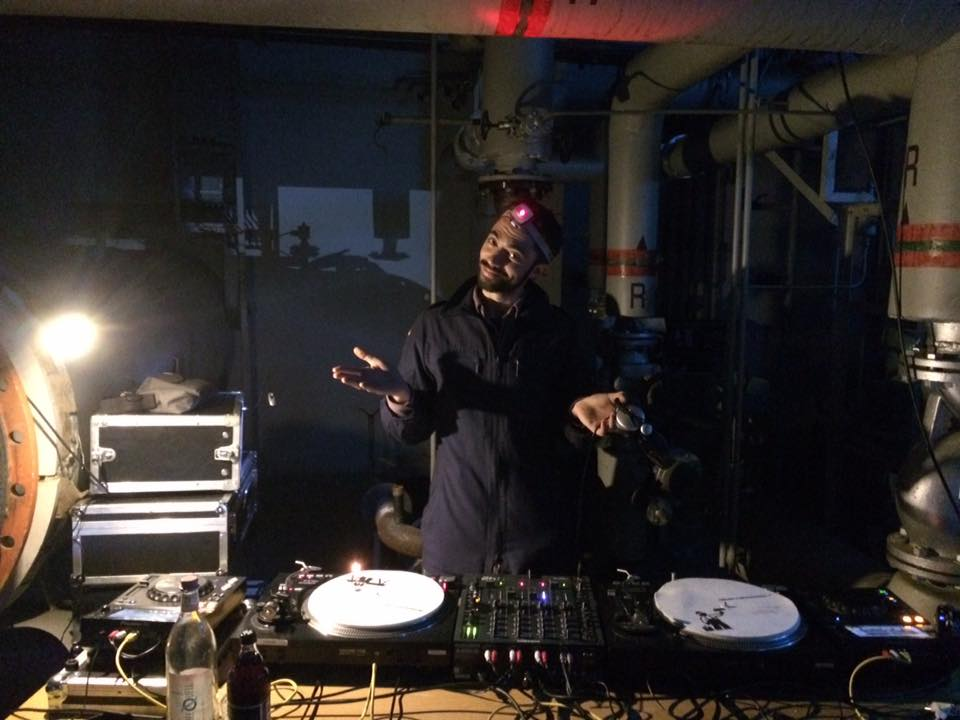
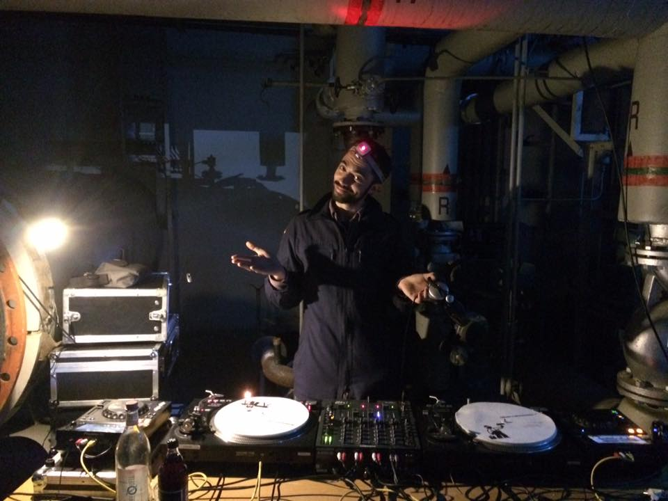

MakesenSelection
Paysagisme Musical
Ambiances musicales raffinées pour mariages, banquets, fêtes privées et événements intimistes.
Sélections éclectiques, sensibles et hors des sentiers battus : jazz, ambient, hard-lounge, soft rock, soul, disco, funk, house de New York, douceurs afro-brésiliennes, raretés groove et pépites intemporelles.
Chaque set est une histoire, un voyage sonore qui respecte l’instant, sa temporalité, son énergie propre. Pas de Top 50, mais des morceaux cultes, connus et reconnus, sélectionnés pour leur qualité et leur puissance évocatrice.
Entre classe et chaleur, entre danse et contemplation : une esthétique musicale pensée pour toucher corps et esprits.
Setup vinyle & digital. Basé dans le Lot (46), déplacements possibles. 07 55 61 45 67
Écoutez un aperçu :
 


Contact : maxhansallein@protonmail.com / 07 55 61 45 67